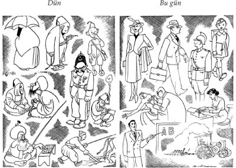
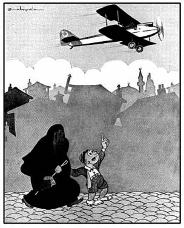

İşte böyle… Tarih Baba'nın anımsamadığı yalın insanların beklentileri çok açıktı. Özgür bir ülkede, el etek öpmeden insanca yaşamak! Bu süreç, iyi padişah ile kötü padişah arasında bir seçim yapmanın çok ötesine geçmişti. Her gün insanların yaşamlarında bir şeyler değişiyordu. Putlar yıkılıyor, kavuklar yuvarlanıyor, uygarlığın önü açılıyordu. Okurlar, eşine az rastlanan bir devrim sürecinin içinde bulunduklarının ayırdındaydılar. Genellikle kişisel çıkarlarıyla ilgili istemlerini öne çıkarmıyorlardı. Uygarlaşma yolunda kararlı adımlar atıldığını günlük yaşamlarında görmek yetiyordu güvenlerini pekiştirmeye. Çoğu zaman sessizdiler, uysaldılar ama, gerektiğinde en acımasız eleştirileri dile getirmekten geri durmuyorlardı. Hem de kimseye saldırmadan, ortalığı kırıp dökmeden söylüyorlardı sözlerini.
Türkiye'de aydınlanma süreci, Cumhuriyet'le birlikte başladı. Yeni dönüşümlerin uygulamaya konulmasıyla, toplumda neler değişiyordu? Dönemin ünlü çizeri Cemal Nadir, 1938 yılında yayımladığı çizimlerinde "On Beş Yılın Hikâyesi!" başlığı altında aşağıdaki karşılaştırmayı yapıyordu:
Görüntüdeki değişimi tanımlamaya gerek var mı? Cumhuriyet 'le gelen uygarlık, okur mektuplarında olduğu gibi, çizimlerde de açıkça sergileniyordu. Seçilen yol, Avrupa'ya boyun eğmeden, yaltaklanmadan Avrupalı olmaktı. Bir başka deyişle, Avrupa 'ya rağmen Avrupalılaşmak...
Avrupalılaşma, gerçekte, Osmanlı toplum yaşamında da etkili olmuş ve temelleri yüzyıllar öncesine uzanan bir akımdı. Ancak Cumhuriyet'in benimsediği çağdaşlık ile, Osmanlı'nın kıyısında dolaştığı Avrupalılık arasında çok büyük farklar bulunmaktadır. Osmanlı, olduğu gibi kalmak koşuluyla yenilenmek, Batı'nın değer yargılarından özünü etkilemeyecek değişimleri kendisine uyarlamak istemişti. Dönemin bütün politikacı ve aydınları, teokratik devlet olgusu ile, yani saltanatla bağdaşmayan bir siyasal yapılanmayı düşünemiyorlardı. İlerici, devrimci Osmanlı aydınları da, "Padişahım çok yaşa" diyebilecekleri, özlemlerini paylaşabilecekleri, birlikte yürüyebilecekleri bir monark görmek istiyorlardı başlarında. Yani çözüm yine saray entrikalarına, el öpüp boyun kırmaya kalıyordu. Geriye dönüp tarihe bir baksalardı, pek çok padişahın görevden alınıp, kiminin yaşamlarına da son verildiği halde, bir arpa boyu yol alınmadığını görebilirlerdi.

Cemal Nadir Güler, Akbaba, S. 251. 1938
Gelişmenin yönünü vurgulamak açısından Cemal Nadir'in aynı başlık altında, 1937 yılında yayımladığı bir başka çizimini de aşağıya aktarıyoruz:
Eğer 1923-1938 yılları arasındaki değişim yukarıdaki gibi idiyse, 21. yüzyılda yaşanmakta olanlar nasıl açıklanabilir? Şimdi biz neredeyiz? Hangi yanlışlar yapıldı da, bu hallere düştük? Anlaşılıyor ki ünlülerin ardına takılmak Tarih Baba'yı bir kez daha yanıltmıştı.

- Anne bak, Sabiha Gökçen uçuyor...
- Bakamıyorum.. Gözlerim kararıyor!..
Cemal Nadir Güler, Akbaba, S. 182, 1937
Kanımızca, bu soruların yanıtını, bir ölçüde aynı dönemin uygulamaları içinde aramak yerinde olur. Sağa ve sola duvarlar örüp, siyasal yaşamı uzun yıllar dar bir alana sıkıştırmak, düşünsel gelişmenin önünü tıkamıştır. Düşünce ve anlatım özgürlüğü üzerindeki abartılı kısıtlamalar, Cumhuriyet karşıtları ile ideolojik temelde tartışma olanağını ortadan kaldırmıştır. Eleştirilmesine olanak tanınmayan düşünceler, topluma, doğruluğu kanıtlanmış gerçekler olarak sunulamaz. Siyasal, bilimsel ve toplumsal alanlarda "doğrular"ın ne olduğunu belirleyen bir üst yetkenin varlığı, bir süre sonra, politikadan bilime, gerçekleşebilecek tüm ilerlemelerin karşısına konulmuş yapay bir engel etkisini gösterecektir. Böyle bir sürece, sağladığı bütün kazanımlara karşın, katıksız bir aydınlanma devrimi denilemez.
Toplumda varolan eğilimlerin bir bölümü sınırlı bir özgürlük içinde gelişirken, karşıt uçlar çağın gelişmelerinden etkilenmeyen ve kendi içine kapanan bir yaşamı sürdürürler. Tartışılıp sorgulanmaya bile gereksinimi bulunmayan dinsel temellere dayandırılan akımlar, böylesi ortamlarda sessiz, ancak daha kararlı bir biçimde gelişebilmektedir. Türkiye'de de böyle olmuştur. Evreni ve çağın gelişmelerini sorgulamaktan yoksun bırakılarak kendilerine öğretilenlerle yetinen, karşıt düşünceleri bir saldırı biçiminde algılayan yeni kuşaklar üretilmiştir. İslam dinini siyasal bir yönteme dönüştürenler, dinsel kuralları inançların dışında kalan her alanda beklentileri doğrultusunda bir araç olarak kullanmışlardır. Sonuçta, algılamadaki kopukluklar nedeniyle, birbirlerini tanımayan, dinlemeyen ve anlamayan iki toplum oluşmuştur.
Kamu gücünü ele geçirince, attıkları her adımda küresel militarizmin deneyimli patronlarıyla işbirliği içinde olanlar, başlarını kaldırıp çevrelerine baktıklarında, yeryüzünde daha önce de aynı yolları izleyen toplumların, üzerinde oturdukları tüm zenginliklere karşın nasıl kan ve ateş içinde kıvrandıklarını görüyorlardır elbette. "Öyleyse neden?" sorusuna yanıt bulabilmek gerçekten çok güç...
Artık okurların karşısında yeni bir gündem bulunuyor. Cumhuriyet'in onca birikiminin bir solukta yok edilmemesi için neler yapılmalıdır? Gelinen aşamada kimsenin, "Artık tartışmanın olanağı kalmamıştır" demeye hakkı bulunmuyor. Demokrasilerin vazgeçilemeyecek erdemleri arasında bulunan çok seslilik, çoğulculuk ve hoşgörü ortamı nasıl sağlanabilir? Bu gün karşılaşılan sorunların aşılması, geçmiştekilerden çok daha güç. Tarih Baba belleğini biraz zorlayabilseydi, böylesi durumlarda neler yapılması gerektiğini gösterecek sayısız örnekler bulabilirdi. Ancak o artık çok yaşlı ve unutkan. Kafasının içi karmakarışık. Bir o kadar da umursamaz olmuş. Söylenecek çok şey var ama, bu sorunun yanıtını da okurların bulmaları gerekiyor. Hem de hiç zaman yitirmeden…
Okurların, her zamankinden çok, Cumhuriyet'in kazanımlarına, demokratik haklarına sahip çıkmaları gerekiyor.
Cumhuriyet karartılmamalıdır.